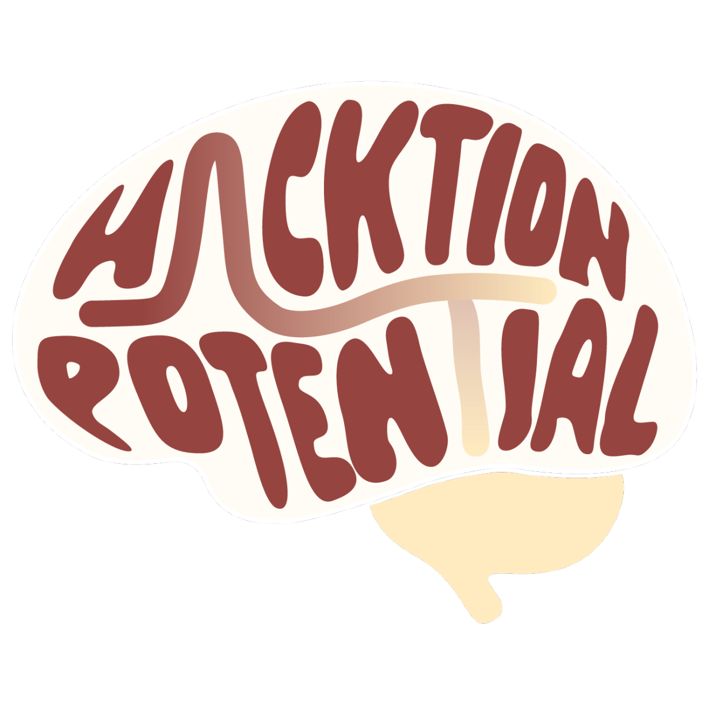
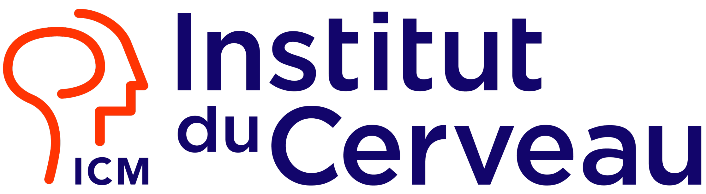
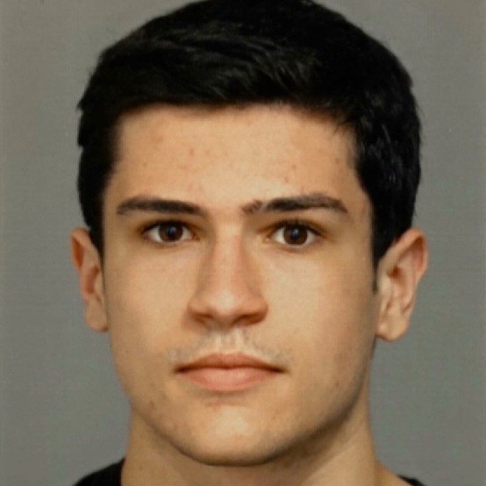
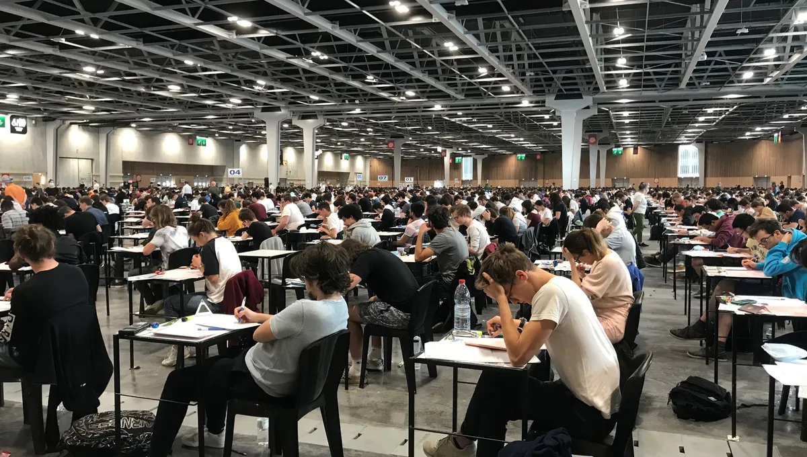
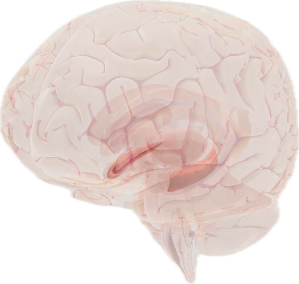

"Can spatial memory be read directly from raw neural activity?"

Sacha Magistère Mathématiques UPSYour heart is racing. A knot in your stomach. A place just triggered your trauma : PTSD.

Short answer. The hippocampus.
The long answer: its subfield CA1, which projects to the amygdala, then to the PAG : the brain's pain and fear center.
CA1 contains "place cells", neurons that fire at specific locations.
To decode this, we need to record neural activity from this region

HippocampusA mouse runs through a 1 m × 1 m U-maze while we record 20 neurons in the PAG. At a random moment, the mouse is electrically stimulated — triggering a fear response.